Recursive digital filters
This demo illustrates the classic filters: Butterworth, Chebyshev 1 & 2, and Elliptic.
Compared to FIR filters, recursive filters of low-order have improved magnitude response (but they do not have linear phase).
Contents
Butterworth filter
clear [b, a] = butter(3, 0.4); % filter order: 3 (3 poles, 3 zeros) % cut-off frequency: 0.2 cycles/sample % Note: Matlab uses non-conventional scaling of % frequency (0.4 instead of 0.2 here).
Note that the magnitude response is flat at both dc and the Nyquist frequency (0.5). There are no ripples. The response is monotonic.
[H, om] = freqz(b, a); f = om/(2*pi); figure(1) clf plot(f, abs(H)) xlabel('Frequency (cycles/sample)') title('Magnitude response')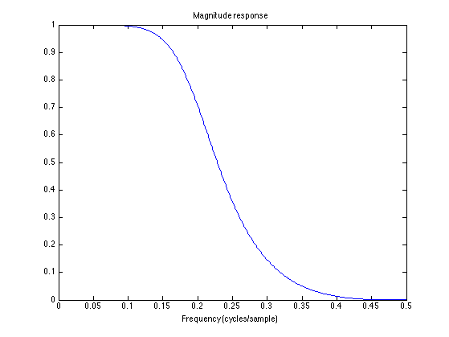
See that the half-power frequency is 0.2
figure(1) clf plot(f, abs(H), 0.2, 1/sqrt(2), 'ro') xlabel('Frequency (cycles/sample)') title('Magnitude response') grid % The frequency response magnitude is 1/sqrt(2) = 0.707 % at f = 0.2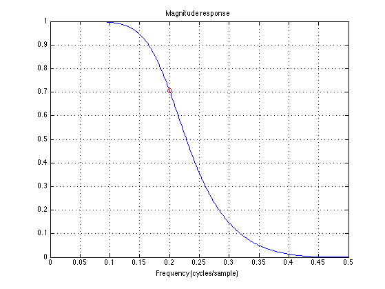
The Butterworth filter has all its zeros at z = -1. That corresponds to the flat behavour of the stop band at the Nyquist frequency.
figure(2) clf zplane(b, a)
6th order: the transition band is sharper.
[b, a] = butter(6, 0.4); [H2, om] = freqz(b, a); figure(1) plot(f, abs(H), f, abs(H2), 'r') legend('3rd order','6th order') grid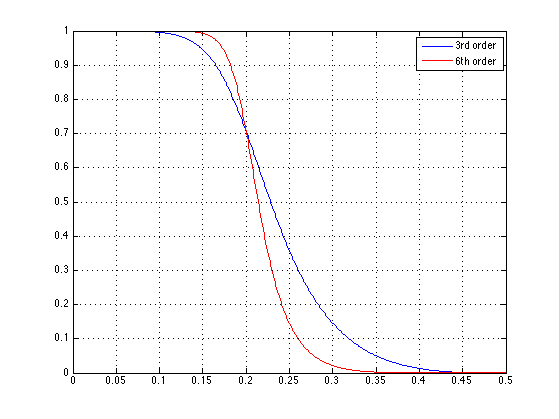
Pole-zero diagram of 6th order Butterworth filter.
figure(2) clf zplane(b, a)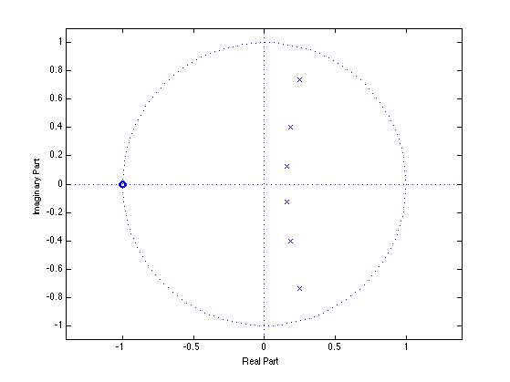
Chebyshev I filter
The Butterworth has quite a wide transition. For the same order, the Chebyshev filter has a narrower transition band.
delp = 0.05; % delp : pass-band ripple Rp = -20*log10(1-delp) % Rp : delp in dB [b, a] = cheby1(3, Rp, 0.4);
Rp =
0.4455
The stop-band of the Chebyshev I filter is monotonic (no ripples). The pass-band has ripples.
[H, om] = freqz(b, a); figure(1) clf plot(f, abs(H)) grid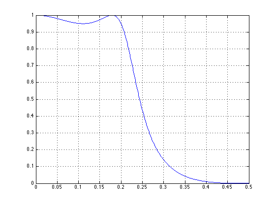
Detail of pass-band: the pass-band has exactly the specified ripple, the pass-band edge is at exactly f = 0.2.
figure(1) ylim([0.8 1.1])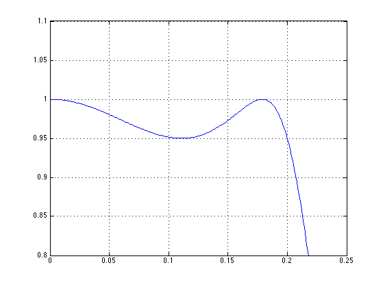
The Chebyshev I filter has all its zeros at z = -1 like the Butterworth filter.
figure(2) clf zplane(b, a) % Each pole corresponds to a positive ripple in the pass-band. % The pole on the positive real axis correpsonds to the positive % ripple at dc.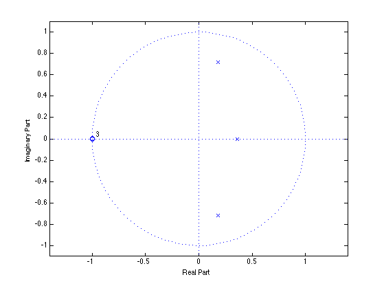
6th order filter:
[b, a] = cheby1(6, Rp, 0.4);
The 6th order filter has exactly the same pass-band ripple and pass-band edge. But it has a narrower transition band.
[H2, om] = freqz(b, a); figure(1) plot(f, abs(H), f, abs(H2), 'r') legend('3rd order','6th order') grid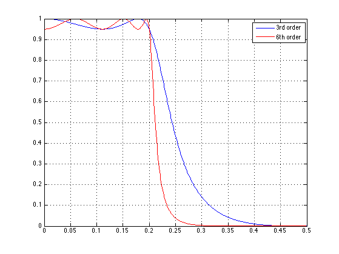
Pass-band detail:
figure(1) ylim([0.8 1.1])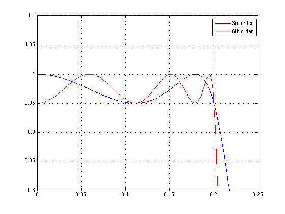
The pass-band is shaped by 6 poles. Each pole corresponds to a positive ripple in the pass-band.
figure(2) zplane(b, a)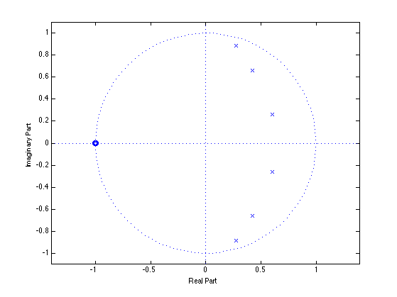
Chebyshev II filter
The Chebyshev II filter is like the Chebyshev I filter. But the stop-band has ripples and the pass-band is monotonic.
dels = 0.02; % dels : stop-band ripple Rs = -20*log10(dels) % Rs : dels in dB [b, a] = cheby2(3, Rs, 0.4);
Rs = 33.9794
The stop-band has nulls not just at f = 0.5.
[H, om] = freqz(b, a); figure(1) clf plot(f, abs(H)) grid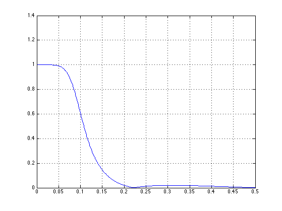
Detail of stop-band: the stop-band has exactly the specified ripple, the stop-band edge is at exactly f = 0.2.
figure(1) line([0.2 0.2 0.5], [0 dels dels], 'color', 'r') ylim([0.0 0.1])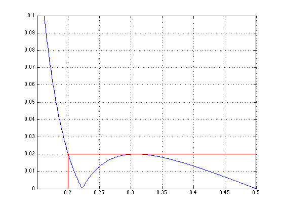
. . . So the zeros are not all at z = -1. The angles of the zeros correspond to the nulls of the frequency response.
figure(2) clf zplane(b, a)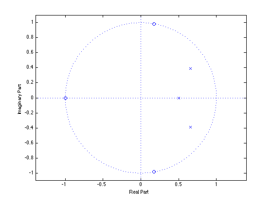
6th order filter:
[b, a] = cheby2(6, Rs, 0.4);
The 6th order filter has exactly the same stop-band ripple and stop-band edge. But the transition-band is narrower.
[H2, om] = freqz(b, a); figure(1) plot(f, abs(H), f, abs(H2), 'r') legend('3rd order','6th order') grid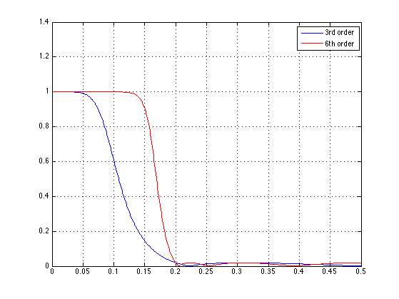
Detail of stop-band: Chebyshev II filters of odd order have a null at the Nyquist frequency; those have a positive ripple there.
figure(1) plot(f, abs(H), f, abs(H2), 'r') legend('3rd order','6th order') grid ylim([0.0 0.1])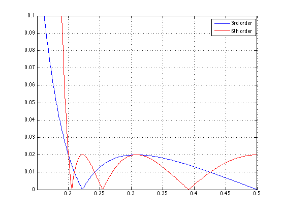
The 3rd order Chebyshev II filter had a zero at z = -1 (3 is odd). Here, the 6th order Cheyshev II filter has no zeros at z = -1 (6 is even).
figure(2) clf zplane(b, a)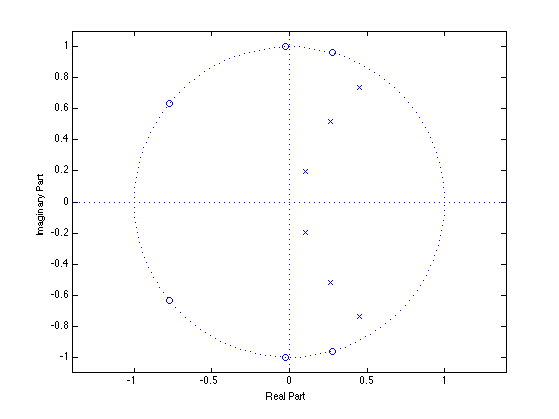
Elliptic filter
Elliptic filters have ripples in both pass-band and stop-band. For the same order, the elliptic filter has a narrower transition band than Chebyshev filters.
delp = 0.05; % delp : pass-band ripple Rp = -20*log10(1-delp) % Rp : delp in dB dels = 0.02; % dels : stop-band ripple Rs = -20*log10(dels) % Rs : dels in dB [b, a] = ellip(3, Rp, Rs, 0.4);
Rp =
0.4455
Rs =
33.9794
[H, om] = freqz(b, a); figure(1) clf plot(f, abs(H)) grid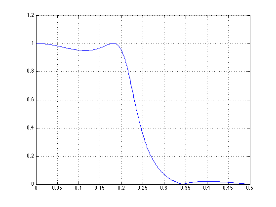
Pass-band detail: the pass-band has exactly the specified ripple, the pass-band edge is at exactly f = 0.2.
figure(1) ylim([0.8 1.1])
Stop-band detail: the stop-band has exactly the specified ripple. But the stop-band edge is determined by the order of the filter. The Elliptic filter has the minimim possible transition-bandwidth.
figure(1) ylim([0.0 0.1])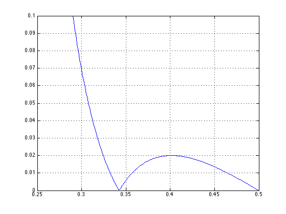
Like the Chebyshev I filter, the poles correspond to positive ripples in the pass-band. Like the Chebyshev II filter, the zeros are not all z = -1.
figure(2) zplane(b, a)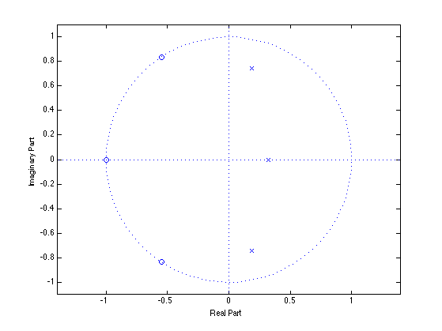
6th order filter:
[b, a] = ellip(6, Rp, Rs, 0.4);
The 6th order filter has a narrower transition band than the 3rd order filter.
[H2, om] = freqz(b, a); figure(1) plot(f, abs(H), f, abs(H2), 'r') legend('3rd order','6th order') grid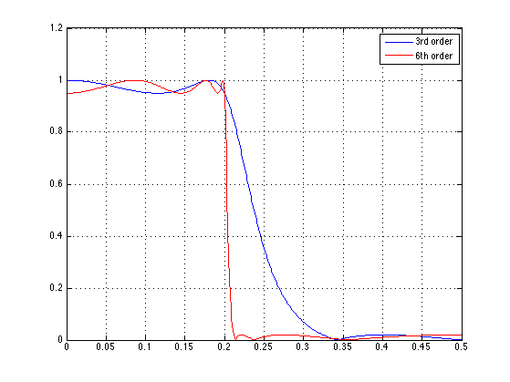
Does the Elliptic filter have unity dc gain? It depends if it is of even or odd order.
Does the Elliptic filter have a null at the Nyquist frequency (f = 0.5)? It depends if it is of even or odd order.
figure(2) zplane(b, a)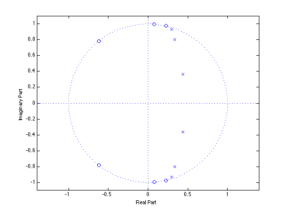
Does the Elliptic filter have a null at z = -1? It depends if it is of even or odd order.
More stop-band attenuation...
When the stop-band attenuation is high, then a logarithmic scale is needed to see it. Note: 0.1 is 20 dB, 0.01 is 40 dB, 0.001 is 60 dB, etc.
20 dB in stop-band
dels = 0.1; Rs = -20*log10(dels) [b, a] = cheby2(5, Rs, 0.4); [H, om] = freqz(b, a); dB = @(x) 20*log10(abs(x)); figure(1) plot(f, abs(H)) grid
Rs =
20
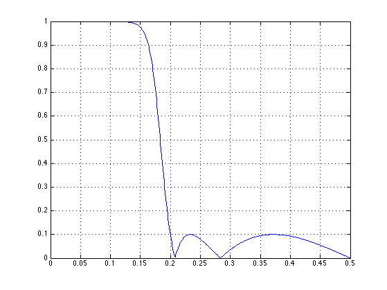 figure(2)
plot(f, dB(H))
grid
ylim([-70 10])
title('Magnitude response in dB')
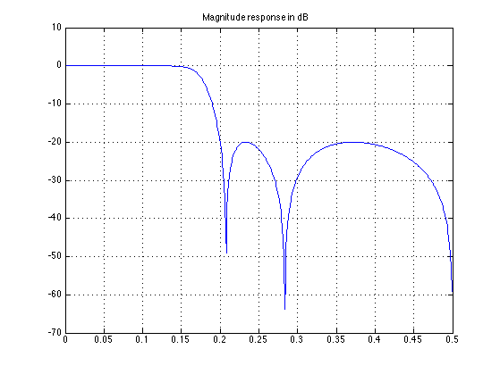 40 dB in stop-band
dels = 0.01; Rs = -20*log10(dels) [b, a] = cheby2(5, Rs, 0.4); [H, om] = freqz(b, a); figure(1) plot(f, abs(H)) grid
Rs =
40
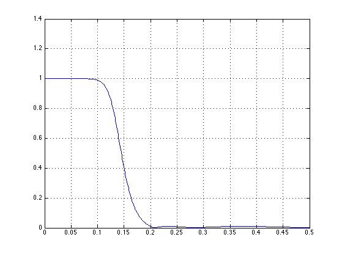 figure(2)
plot(f, dB(H))
grid
ylim([-70 10])
title('Magnitude response in dB')
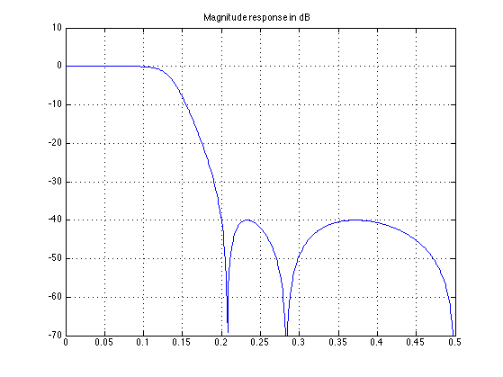 60 dB in stop-band
dels = 0.001; Rs = -20*log10(dels) [b, a] = cheby2(5, Rs, 0.4); [H, om] = freqz(b, a); figure(1) plot(f, abs(H)) grid
Rs =
60
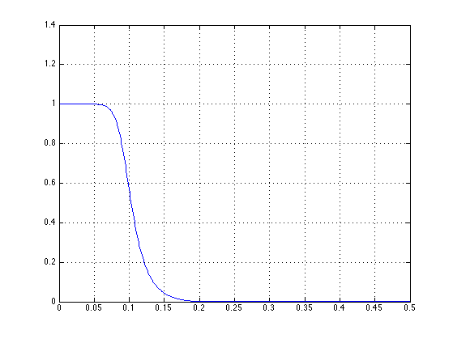 figure(2)
plot(f, dB(H))
grid
ylim([-70 10])
title('Magnitude response in dB')
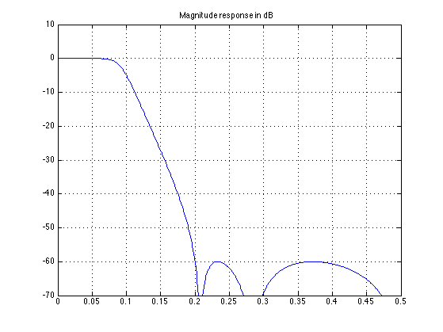